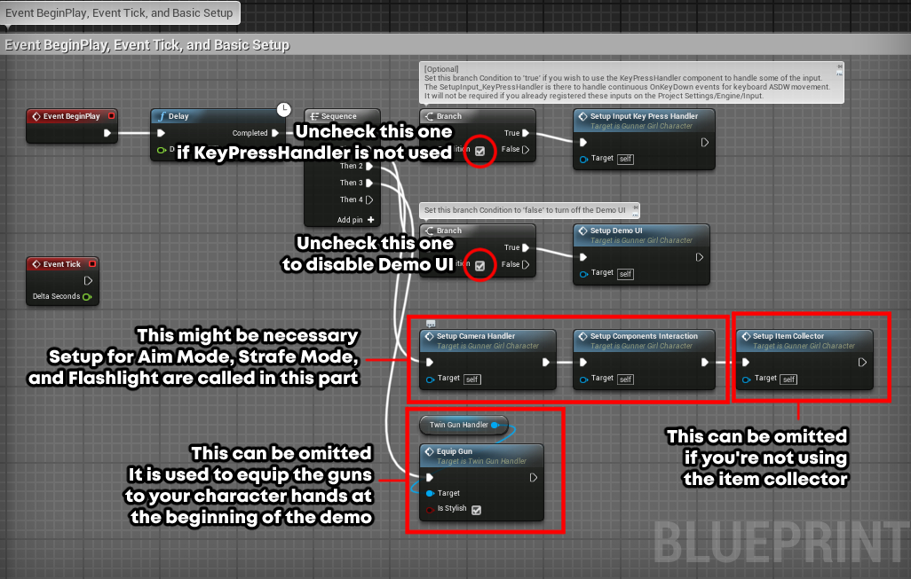

Female Shooter - User Guide
Adding functionalities to your character
Open your navigator, go to Content/FemaleShooter/Blueprint/Character/.
The folder contains 2 Character Blueprints there that you can use as examples.
- GunnerGirl_Character, the default character that showcase the full functionalities of the package,
- ThirdPersonModCharacter, an example on how to add only the dual gun shooting mechanism to your existing character.

The first thing that you should do is to open either one of the character blueprints and go to the event graph.
There will be a list of inputs/actions that the character can perform.
The example above is the list of actions available inside the GunnerGirl_Character.
The inputs used in this Event Graph is the same one as the default control scheme used for the Female Shooter demo.
If you want to test whether the template works on your character or not, you can try copying all of the nodes from the Event Graph and then paste it to your character.
This will give your character all of the functionalities that is available in the demo.
A step by step guide can be found here in case you encounter some problem during the process.
Once you're done with adding all the functionalities that you might need, we will next proceed to preparing the animation system for your character.
If you need more info about the available actions, details can be found in the sections below.
Demo Related Nodes
The nodes with red backgrounds are used to provide functionalities for the demo.
These includes,
-
Toggle Demo UI
Used to turn on/off the UI interface of the Female Shooter demo. -
Quit Game
Quit the game by pressingEsc orSpecial Left button.
These nodes are mostly for interacting with the user interface of the demo build, can be excluded if you're not going to use the Demo UI.
They are not mandatory for the Female Shooter template to function properly.

Camera Switcher Nodes
On the area below the setup, you can see nodes used for the Camera Switcher.
Camera Switcher component used to be optional in 1.2.0, mostly used for camera switching mechanism.
But as of 1.3.0, they are required to ensure that the aiming function can works properly.
For details on how to setup Camera Switcher's aiming functionality, see Aim Mode Guide.
For details on how to use the rest of Camera Switcher functions, see the following article.
Setup Nodes
The content of the setup nodes can also be omitted depending on your requirements.
If you do not wish to use them, you can either exclude them when you copy the template nodes,
or deactivate them by unchecking their setup functions in the 'Begin Play and Tick' section.

Locomotion Nodes
These are the nodes used for the Female Shooter locomotion, mainly handled by the GunnerGirlComponent.
The list of inputs/actions available within these nodes includes,
-
Character Movement
Move the character.
Positive
AxisValue move the character forward or right, negative value backwards or left.
Used for both gamepad and keyboard inputs in the default setup.
On the gamepad, default input is set to
Left Thumbstick .
Light press will make the character walk, strong press make the character run.On the keyboard, default input is set to
ASDW and handled by the KeyPresshandler component.The KeyPressHandler component is used here because the Female Shooter asset does not come with input registers on the project settings.
Usage of this component is optional and is not required if you already register your inputs in the project settings.
-
Walk/UnWalk
Activate/deactivate walking mode.
Used for keyboard inputs only in the default setup.
Default input is set toLeft Shift .
Walking is activated when the key is held down, deactivated when the key is released.The gamepad input for walking does not use this function.
Walking for gamepad is done by modifying theAxisValue parameter ofMoveForward andMoveSideward instead.
-
Crouch
Activate/deactivate crouching.
Used for both gamepad and keyboard inputs in the default setup.
Default inputs are set toLeft Ctrl ,Left Alt , andRight Shoulder .Crouch is activated when the key is held down, deactivated when the key is released.
Crouch walk can be performed by moving the character while crouching.
-
Roll
Perform rolling when the character is on the ground.
Used for both gamepad and keyboard inputs in the default setup.
The duration of the roll is controlled by the rolling animation.
Default inputs are set toE andFacebutton Right .
-
Jump Action
Trigger either a normal jump, double jump, or a somersault.
Used for both gamepad and keyboard inputs in the default setup.
Default inputs are set toSpacebar andFacebutton Bottom .
There are 3 jump actions that can be performed depending on the context,
-
If the character is on the ground, a normal jump will be performed.
-
If the character is airborne and the parameter
IsAllowSomersault is set totrue, the character will perform a somersault.
By default, the somersault direction can be controlled using the Left Thumbstick .
If no somersault direction is given, the character will perform a somersault to the direction of their current movement.
-
If the character is airborne and the parameter
IsAllowSomersault is set tofalse, the character will perform a double jump.
Do make sure that the value of JumpMaxCount is set to higher than 1 to enable the double jump functionality.
If you're not sure how to do this, see this article for instructions.
-
-
Camera Control
Perform basic camera control.
Used for both gamepad and keyboard inputs in the default setup.
Default input is controlled using theRight Thumbstick orMouse Movement .Camera speed can be modified using either the
TurnRatePerSecond orMultiplier variables.
Camera direction can be inverted using theIsInverted variable.
-
Strafe Mode
Switch between normal movement and strafing movement
(character will always face forward during strafe mode) .Used for both gamepad and keyboard inputs in the default setup.
Default inputs are set toY andFacebutton Top .
-
Flashlight
Used to the equip/unequip the flashlight and to turn the lights on/off (once equipped).
Used for both gamepad and keyboard inputs in the default setup.
Default inputs are set toQ andD-Pad Down .
Further details on each flashlight functions can be found in this guide.
Shooting Nodes
These are the nodes used to enable the shooting system of the character, mainly handled by the TwinGunhandler.
The list of inputs/actions available within these nodes includes,
-
Gun Equip/Unequip (Normal + Gunspin)
Equip/Unequip the guns to the character's hands.
Used for both gamepad and keyboard inputs in the default setup.
Default input to toggle the non-gunspin animation is set to
1 andLeft Shoulder Button .
Default input to toggle the gunspinning version is set to2 andD-Pad Up .
-
Gun Shoot
Start/stop shooting using both guns.
The shots will be fired according to the pattern of the currently active
ShootingPattern variable.
A muzzle flash will be spawned on each gun's muzzle whenever the shot is triggered.Used for both gamepad and keyboard inputs in the default setup.
Default input is set toRight Trigger andLeft Mouse Button .
Hold the key to start shooting, release the key to stop shooting.This function triggers the start of the shooting animation.
The timing of when the actual shot is fired is determined by the position of theLeftGunShot notify inside the animation.
See the Notify sections for more information.
-
Individual Shooting
Activate individual gunhand shooting mode.
When either one of these functions are called and activated, the character will shoot from 1 hand only, either left or right.
Used for both gamepad and keyboard inputs in the default setup.
Default input is set toD-Pad Left andZ for left hand shooting.
Default input is set toD-Pad Right andC for right hand shooting.
Next article: Setting up the animation system